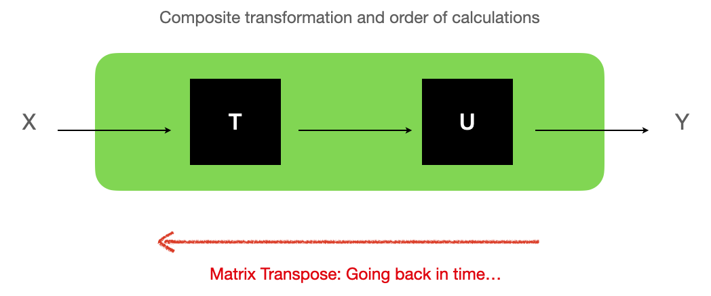

Intro
I really do not have that much spare time, but I also really wanted to learn more about “Cybernetics”. So I bought (yet another) book, a classic in this case (I think it was first edited in 1956): “An Introduction to Cybernetics”, by W. Ross Ashby (“Ashby” from now on for short).
So far, let me be clear: If interested in the concept of “Cybernetics”, so far, the book seems like an EXCELLENT reference.
As I was combing through it though, I came across chapter 2, section 2/10 “Representation as a matrix”, and there already something bothered me… And then the text kept bugging me some more, so I thought I’d give it a more honest study…
This entry is in fact about matrices and digraphs, and how the matrix transpose affects the edges directions in the corresponding digraph 🙂
Important EDIT after writing the blog post
THIS WHOLE POST is rendered somewhat pointless by this sentence of the Wikipedia entry on adjacency matrix:

As I am a student of Graph Theory, and reading about Cybernetics (an “applied science”), the whole thing was just a matter of convention!
REGARDLESS, this exercise here has helped me better grasp the concepts and relationships of digraphs, matrices and their transpose, and so I feel it wasn’t a total loss of time after all… (Although it took me a few hours overall until I was happy with my understanding of it all…)
So keep reading if you want, although I’d understand if you didn’t… (tip: there is code to work with the “twisted” ways of applied scientists using graph theory approach to adjacency matrices ;)).
Ashby’s matrix is in the wrong direction
Alright, so maybe it’s just a choice, more than a convention, but as I am used to it, a digraph (directed graph) can be represented as an adjacency matrix, where for each ROW (representing an origin vertex), one can tell to which other vertex there is an edge if there is a value different from 0 in a certain column (representing the destination vertex).
So I read edges “from left to right”, basically, to visualize edges. The igraph package follows this convention. An example in R:
library(igraph)
my_sort_matrix <- function(t_m) {
# For readability...
t_m[order(rownames(t_m)), order(colnames(t_m))]
}
clean_adj_mat_from_g <- function(g) {
m_g <- igraph::as_adjacency_matrix(g)
m_g <- as.matrix(m_g) # required for transposing.
my_sort_matrix(m_g)
}
# Traditional look of an adjacency matrix, as defined by "change" here (edges of a graph, visually):
# A -> A, B -> C, C -> C
g <- igraph::graph(c("A", "A", "B", "C", "C", "C"), directed = TRUE)
plot(g)
# Now to the directed adjacency matrix, igraph format:
m_g <- clean_adj_mat_from_g(g)
Ashby’s matrix representation however is to be read VERTICALLY, from top to bottom: First read a column (representing an origin vertex) downwards, and where you see a ‘+’ sign (instead of a 1), there is an edge towards that row’s vertex (the destination). The “transformation” notation is then really the transpose of the adjacency matrix.
And that’s interesting…
Representing a “transformation”: Matrix Transpose and Time
To put it shortly, an edge from an origin vertex (the “operand”) to a destination vertex (the “transform”) represents a “transition”.
A graph generated by an Ashby’s matrix is a representation of a set of transitions, also called a “transformation”.
transformation_from_adjacency <- function(t_m) {
# an adjacency matrix, with 1 for directed edges in the reverse direction
# 0 otherwise.
my_sort_matrix(
t(t_m) # Quite straightforward. But expects valid numerical matrix as input
)
}
# Print a "transformation" in Ashby's "matrix" format:
# Note: We assume each operand and transform is named with one letter only.
print_1char_transformation <- function(transformation_adjacency_matrix) {
t_a_m <- transformation_adjacency_matrix # shorter
cat(paste(' V',
paste0(colnames(t_a_m), collapse= ' '),
"\n",
paste0(lapply(rownames(t_a_m),
function(x) {
paste(x, paste0(ifelse(t_a_m[x,] == 1, '+', '0'), collapse=' '), '\n ')
}), collapse='')))
}
# Take a "normal" igraph directed adjacency matrix,
# make it follow the "transformation" format
t_m_g <- transformation_from_adjacency(m_g)
print_1char_transformation(t_m_g)Then the adjacency matrix from above that looked like this:
# A -> A, B -> C, C -> C
> m_g
A B C
A 1 0 0
B 0 0 1
C 0 0 1In Ashby’s matrix format looks like so:
> t_m_g <- transformation_from_adjacency(m_g)
> print_1char_transformation(t_m_g)
V A B C
A + 0 0
B 0 0 0
C 0 + +Observe in the above, how the edge B -> C is moved to another position of the matrix.
Here an important note, for the intuitive understanding. As I was getting my head around it… I had to look it up to understand what this all meant intuitively:
Naturally, this can be shown as a graph or a matrix, but as seen earlier, using directly igraph would represent the transformations in the wrong direction (replacing ‘x’ with 1)… Which in fact just means:
If a matrix represents a transformation (from operand to transform), the transpose represents what would happen if we went “back in time”.
I didn’t invent that explanation (found it in this reference), but it makes complete sense intuitively (to me) when looking at the Cybernetics concept of transformation, matrices, and corresponding graphs. In any case, this “explains” why when you show a matrix representing a digraph, and then its transpose, you get the same graph with the edges in the opposite direction.
Composing a transformation
Now If you apply to an operand a transition, you get a transform (Call that “operation T”).
You can then use that transform as an operand in another, different (or not) transition, to obtain a new transform (“operation U”).
If T is represented as an m*n matrix A, and a vector x of n elements is to be transformed, the “natural” way to write that mathematically is “Ax” (x being then vertical).
That would justify Ashby’s format.
Let’s have a look from a code perspective…
composition should be, “apply transformation T, then apply transformation U, i.e. U(T(x))”:
composition <- function(m_t, m_u) {
transformation_from_adjacency(
transformation_from_adjacency(m_u) %*%
transformation_from_adjacency(m_t)
)
}We can then try to do it “for real”:
# Exercise 3 of section 2/16 of the book becomes:
gt <- igraph::graph(c("a", "b", "b", "d", "c", "a", "d", "b"), directed = TRUE)
gu <- igraph::graph(c("a", "d", "b", "c", "c", "d", "d", "b"), directed = TRUE)
gv <- igraph::graph(c("a", "c", "b", "b", "c", "d", "d", "c"), directed = TRUE)
m_t <- clean_adj_mat_from_g(gt)
m_u <- clean_adj_mat_from_g(gu)
m_v <- clean_adj_mat_from_g(gv)
# Let's look at some examples here of what things look like:
m_t # adjacency matrix
print_1char_transformation(transformation_from_adjacency(m_t)) # Ashby's transformation in matrix notation
m_u
print_1char_transformation(transformation_from_adjacency(m_u))
m_v # Expected result of compositionSo here, if we apply T, then U, the origin vertex (operand) “a” should first transform to “b”, then “b” should transform to “c” . This applies to all proposed transitions, and V represents applying U after applying T indeed.
To do it in mathematical traditional notation, it would be: U(T(x)), so in R, we would be doing U %*% T %*% x.
In Ashby’s notation, yes:
m_t_then_u <- composition(m_t, m_u) # Apply T, then U# This should give the same result as for m_v
> print_1char_transformation(transformation_from_adjacency(m_t_then_u))
V a b c d
a 0 0 0 0
b 0 + 0 0
c + 0 0 +
d 0 0 + 0
> print_1char_transformation(transformation_from_adjacency(m_v))
V a b c d
a 0 0 0 0
b 0 + 0 0
c + 0 0 +
d 0 0 + 0Indeed, they are the same.
BUT WAIT! “Re-discovering the wheel”
How about we applied the adjacency matrices in the other order, where T (in adjacency matrix format) multiplies our (horizontal) x vector, and then we multiply that by U (in adjacency matrix format).
> simple_compose <- m_t %*% m_u
> print_1char_transformation(transformation_from_adjacency(simple_compose))
V a b c d
a 0 0 0 0
b 0 + 0 0
c + 0 0 +
d 0 0 + 0That works JUST THE SAME! Granted, as these transformations are closures, they are represented by square matrices.
We just have multiplied in the opposite order, with x an horizontal vector of n elements, that’s it (“T_a” here is the adjacency matrix, which is in fact an n*m matrix, from the transpose of T, an m*n matrix representing the corresponding “transformation”…):
x %*% T_a %*% U_a = yCould then be read like so: “x is transformed by T, then by U”. And code-wise, we can use igraph’s expected format for adjacency matrix for a digraph, plotting it then easily:
plot(graph_from_adjacency_matrix(simple_compose))
We now just have re-discovered that from two transformations applied in a given order, to go back in time you need to run the transpose, in opposite direction:
\((AB)^T = B^TA^T\)
And “intuitively” (if any of this is intuitive…), the visualization for this “revert time”, and changing direction of edges in the corresponding graph, and how it all ties together… Hopefully this here helps:

Well, it would simply seem that Ashby “transformation” notation is a bit backwards for my taste (and that of the igraph package), but otherwise not wrong at all… I just need to be careful in the order of the matrices multiplications…
Validations
Following this, we can now do some tests…
> x <- c(1, 0, 0, 0) # What would the input "a" become?
> names(x) <- c("a", "b", "c", "d")
> x %*% simple_compose # a should become c
a b c d
[1,] 0 0 1 0Which is what was expected… And the same as the transformation described by V (as defined earlier :)).
Notes
There are two “basins” (“where the concept of stability appears”) in the above graph (transformation), one at “b”, and one at “c-d” (a cycle). That is, the transformation here, which could be a system, when it transitions from one state to the next, stabilizes towards either of both basins, depending on the origin state.
Such systems and transformations (I have only had time to read so far in the book) look to me like a simplistic Markov chain with probabilities 1…
One last detail here, though: In the graph above, if we go from “a” to “c” using the normal transition, what would be of “going back in time”, as moving from “c” to “a” would then be one of two options, the other being going to “d”… We then would face a case of multi-valued transition. Oh well…
Conclusion
Ashby’s matrix notation is wrong to me, EXCEPT FOR the fact that it help writing the math in the “right” order (The way I’m used to it in math classes, for systems of equations).
But for igraph, the adjacency matrix format expects things to come the other way around, and so it’s easier to write R code to work the other way around…
And I feel this exercise has refreshed my intuition of what a matrix is all about, and how a matrix and a corresponding graph are related to one another. The idea of a “transformation” as an explanation of what a graph represents, the implications on operations with matrices… This exercise was a nice little dive into the whole concept.
Regardless, I should be studying for the two term papers I am expected to deliver next week, instead of diving in yet other subjects (albeit very much related here to Graph Theory)… So I’ll get back to that.
References
“An Introduction to Cybernetics”, by W. Ross Ashby (found in Ed. Martino Publishing, 2015) – (This is not a referral link, i.e. I have no personal interest in you clicking it or not…)